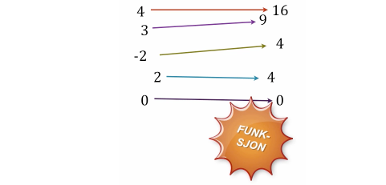
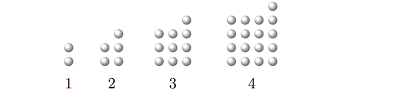
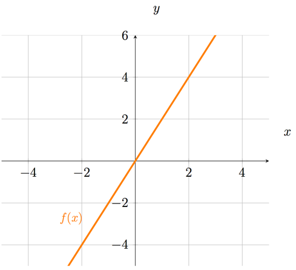
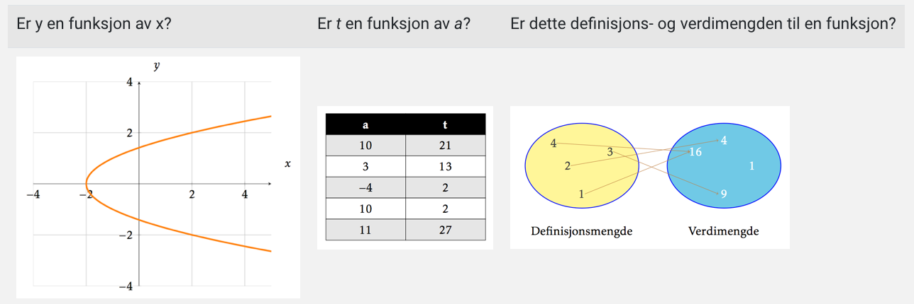

Hva er en funksjon?
Contents
Hva er en funksjon?¶
Nå skal vi se på hva vi mener med en funksjon og hvordan vi kan framstille funksjoner som tabeller, funksjonsuttrykk, grafer osv.
Du skal kunne gjøre rede for:
hva en funksjon er
hva en innverdi og utverdi er
hva et funksjonsuttrykk er
at vi kan framstille en funksjon som en graf, tabell, funksjonsuttrykk eller tallpar
skrivemåten \(y=f(x)\)
hva en definisjonsmengde og verdimengde er og kunne finne definisjonsmengde og verdimengde for noen funksjoner
hvordan vi kan skrive mengdene med korrekt notasjon
forskjell på en algebraisk uttrykk, likning, funksjon og identitet.
Funksjonsbegrepet¶
I denne videoen skal vi se på hva vi mener med en funksjon og hvordan funksjonen kan framstilles.
Definisjon
Vi sier at en utverdi er en funksjon av en innverdi når det til hver gyldig innverdi hører én og bare én utverdi.
Ofte benytter vi x som variabelnavn for innverdien og y for utverdien. Da kan vi skrive: \(y=f(x)\) (\(y\) er en funksjon av \(x\)) når hver \(x\) gir nøyaktig én verdi av \(y\).

Oppgave 1
Her ser du noen figurtall. Under hver figur står figurnummeret.

Du skal nå finne et uttrykk hvor innverdien er figurnummeret og utverdien er antall prikker. Bruk bokstaven \(n\) for innverdi og skriv ned uttrykket
En skrivemåten¶
I denne videoen vil du bli bedre kjent med funksjoner og hvordan vi skriver funksjonsuttrykk.
Oppgave 2
Bildet over viser en klasse med elever.
Vi har en funksjon som gir oss sammenhengen mellom hårfarge og antall som har den hårfargen. Funksjonen kaller vi \(f\). Da har vi at
\(f(\)hårfarge\()\) = antall med den hårfargen
Ut fra figuren kan vi finne at:
\(f(\)gult\()=1\)
Hva er \(f(\)brunt\()\)?
Oppgave 3

Grafen til funksjonen \(f\) er tegnet i koordinatsystemet. Hva er \(f(2)\)?
Løsning
\(f(2)=4\).
Litt om mengder¶
Det hender ofte at vi ønsker å oppgi mengden av alle tall som er begrenset av to tall. Funksjonen \(f(x)=\sqrt{4-x^2}\) er for eksempel kun definert for \(x\) fra og med \(-2\) til og med \(2\). Det er vanlig å skrive dette slik:
Klammeparentesene forteller oss at \(x\) kan være lik alle tall fra og med \(-2\) til og med \(2\).
Mengden av alle \(x\) slik at \( -4<x\leq 5\) kan vi skrive som \( \langle -4, \ 5 ]\)
Den spisse parentesen foran \(-4\) viser oss at \(x>-4\). Det vil si at \(x\) ikke kan være lik \(-4\), men må være større.
Generelt har vi altså:
\( [ a, b] \) er alle \(x\) slik at \( a \leq x \leq b\)
\( \langle a, b] \) er alle \(x\) slik at \( a < x \leq b\)
\( [ a, b\rangle \) er alle \(x\) slik at \( a \leq x < b\)
\( \langle a, b\rangle \) er alle \(x\) slik at \( a < x < b\)
Definisjons og verdimengde¶
Nå skal du se på både hva definisjonsmengde og verdimengde er og hvordan du skal skrive disse mengdene korrekt.
Et praktisk eksempel
I denne videoen skal vi se på et praktisk eksempel hvor vi finner definisjons- og verdimengden.
Oppgave 4
Du har sett på hva en funksjon er.
En viktig betingelse er entydighet: til én innverdi hører det bare én eneste utverdi.
Her ser du tre representasjoner av sammenhenger som ikke er funksjoner. Forklar hvorfor.

Identitet, funksjon, algebraisk uttrykk og likning¶
Vi har så langt sett på algebraiske uttrykk, likninger og funksjoner. I tillegg til disse tre har vi også det som vi kaller for en identitet. En identitet er rett og slett en sammenheng som er sann for alle lovlige verdier av symbolene som vi kan sette inn i sammenhengen.
I filmen nedenfor forklarer vi disse begrepene.